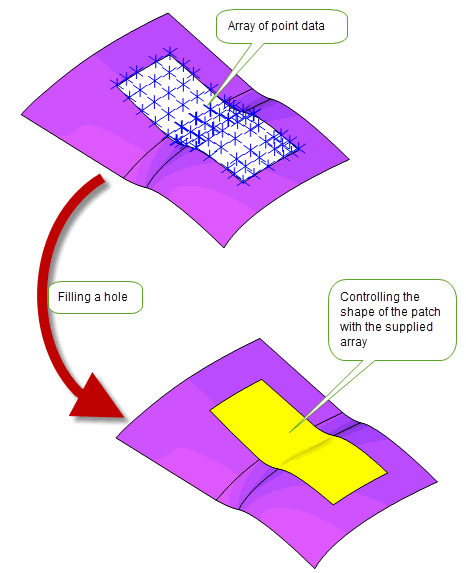

| |
Filling Holes In A Body |
| <<< Patching | Chapters | Moving Faces >>> |
Parasolid provides a comprehensive tool for filling holes in sheet and solid bodies with the function PK_BODY_fill_hole. As its name implies, this function can be used to fill holes in a body, but it also can be used to perform modelling operations in a wide variety of situations.
|
PK_BODY_fill_hole can fill holes that may be present in solid and sheet bodies, such as those shown in Figure 70-1. These may arise for a variety of reasons, such as:
PK_BODY_fill_hole can also fill holes on general bodies if the boundary surrounding the hole is locally manifold. |
|
|
PK_BODY_fill_hole can fill any gaps that are formed between two touching bodies, as shown in Figure 70-2. |
|
|
By adding wire bodies to a sheet body such that, when combined with the laminar edges of the sheet, a closed loop is formed, you can use PK_BODY_fill_hole to fill the “hole” formed by the wire bodies and the laminar edges, effectively extending the sheet to a new boundary by adding a new face. This is shown in Figure 70-3. |
|
|
PK_BODY_fill_hole can be used to fill a closed wire body, and in conjunction with Parasolid’s lofting and profiling functionality, this can form the basis of a powerful model creation toolkit. This is shown in Figure 70-3. |
|
|
In specific circumstances, PK_BODY_fill_hole can even be used to bridge the gaps between different sheet bodies. See Section 70.2.2, “Supplying a fill sheet”, for more information. |
PK_BODY_fill_hole can be used to fill holes in bodies in all of these situations, either by asking Parasolid to generate a sheet for you, or by supplying a sheet to fill the hole yourself. This chapter explains how to use PK_BODY_fill_hole to perform these operations and provides complete details of the range of options and functionality available.
|
Note: This functionality offers partial support for facet geometry. |
For an example of this functionality, see the code example in the
C++\Code Examples\Modelling\LOP\Fill
Hole
folder, located in
example_applications
in your Parasolid installation folder.
Figure 70-1 Filling holes in bodies
Figure 70-2 Filling gaps between touching bodies
Figure 70-3 Using wires to add and create faces
PK_BODY_fill_hole receives the following arguments:
target |
The target body containing the hole to be filled. This body is modified by the operation. |
n_edges edges |
An array describing the edges of the hole to be filled. See Section 70.1, “Introduction” for more information on the description of holes/boundaries which can be filled. At least one of the edges should be an edge of the target body. The bodies from which edges are taken must not intersect or have edges that meet anywhere except at vertices in the hole boundary. If you are supplying edges from a wire body, all the edges of the wire body must form part of the hole boundary. |
tolerance |
A specified tolerance for the operation. See Section 70.5, “Using tolerances”, for more information. |
options |
A set of options to control the results of the fill hole operation. See Section 70.1.2, “Summary of options”, for an introduction to these options. |
A number of arguments are returned by the function to record tracking information and fault status. See Section 70.6, “Tracking and fault status”, for more information.
PK_BODY_fill_hole contains a wide variety of options to let you control the result of the operation. The following table summarizes the options that are available, full details of which are given in the rest of this chapter.
method |
The method used to fill the hole. Different methods may produce different result bodies. See Section 70.2, “Methods for patching”, for more information. |
fill_sheet |
The sheet body that is used to fill the hole. See Section 70.2, “Methods for patching”, for more information. |
patch_topology |
Control of the number of faces in the patch, in cases where you let Parasolid generate the patch automatically. See Section 70.3.1, “Controlling the topology of the patch”, for more information. |
fill_preference |
Control of the smoothness of edges at the hole boundary. See Section 70.3.2, “Specifying whether boundary edges are smooth”, for more information. |
non_smooth_edges non_g2_smooth_edges |
Arrays of edges for which the boundary smoothness controls are relaxed. See Section 70.3.2, “Specifying whether boundary edges are smooth”, for more information. |
non_g1_behaviour non_g2_behaviour |
Controls behaviour when the hole boundary is not sufficiently G1 or G2 smooth and |
smoothness |
Controls whether the smoothness of boundary edges should be G1 or G2 smooth. See Section 70.3.2.1, “Controlling the smoothness of boundary edges”, for more information. |
internal_smoothness |
Control of smoothness of internal edges in generated patches. See Section 70.3.4, “Specifying smoothness of internal edges”, for more information. |
attach_sheet |
Whether to attach the fill sheet to the body. Default: PK_LOGICAL_true. See Section 70.3.5, “Attaching the sheet to the result body”, for more information. |
supporting_bodies |
Wire bodies or an acorn vertex that you can use to guide the shape of the generated patch. See Section 70.4, “Using supporting bodies to control the shape of a patch”, for more information. |
imprint_supporting_bodies |
Control over whether to imprint supporting bodies onto the result. See Section 70.4.1, “Imprinting edges from supporting bodies” |
n_clamps clamps clamp_indices |
Specification for clamps to be applied to supporting bodies. See Section 70.4.2, “Applying clamps to acorn supporting bodies”. |
optimise |
Control over whether to optimise the fill hole operation for performance, or for quality of the result. See Section 70.7, “Optimising the fill hole operation”, for more information. |
body_type |
The preferred type of the resulting body. See Section 70.8, “Controlling the type of the resulting body”, for more information. |
check_fa_fa |
Whether to check for face-face inconsistencies during the operation. See Section 70.9, “Checking face-face inconsistencies”, for more information. |
update |
Update switch to maintain consistency when rebuilding models built in older versions of Parasolid. See Section 70.10, “Update control”, for more information. |
tracking_control |
Control over whether to return additional edge tracking information when outputting an unattached patch. See Section 70.3.5.1, “Tracking the edges of unattached patches”, for more information. |
You can fill a hole in a body using a number of different basic methods, all of which are controlled using the
method
option. These methods can be summarized as follows:
If you set
method
to PK_fill_hole_create_patch_c, Parasolid generates a suitable sheet body to match the boundary of the hole. This is the most common way of filling holes in a body.
Figure 70-4 Letting Parasolid generate a patch to fill a hole
When you ask Parasolid to generate a patch in this way, the boundary of the hole is maintained, and the patch meets the faces that surround the hole smoothly wherever possible. The boundary edges of the hole must form a single closed loop. If filling a gap, rather than a rubber face, you can use additional wire edges to ensure that this is the case.
You can further control the characteristics of the patch using the options described in Section 70.3, “Controlling the appearance of the result”.
Rather than allowing Parasolid to generate a patch for you, you can supply one yourself by setting
method
to an appropriate value and supplying a suitable sheet body using the
fill_sheet
option.
The supplied
fill_sheet
is not destroyed after the call to PK_BODY_fill_hole: you should delete the
fill_sheet
yourself if it is no longer required for other purposes.
Different results are possible, depending on the value of
method
:
Figure 70-5 illustrates the differences between these two methods.
Figure 70-5 Filling a hole using a supplied fill sheet
If
method
is PK_fill_hole_trim_to_sheet_c, you can also use PK_BODY_fill_hole to fill the gap between two separate sheet bodies. In order to use PK_BODY_fill_hole in this way, you must ensure that the supplied sheet is at least big enough to cover the entire gap between the received
edges
.
Figure 70-6 shows an example where the gap between two target bodies is bridged using a fill sheet that is not as wide as the targets themselves. In order to achieve this, vertices were imprinted on the targets so as to create additional edges, such that each edge is no wider than the fill sheet. These edges are then received by PK_BODY_fill_hole (one from each target body) in order to successfully bridge the gap.
Figure 70-6 Bridging the gap between two sheet bodies.
A final method of filling a hole is to extend neighboring faces so that they cover the hole. You can do this by setting
method
to PK_fill_hole_extend_adjacent_c.
The advantage of this method is that you do not need to supply a
fill_sheet
, and Parasolid does not need to generate a patch face. However, it can only be used in cases where the configuration is such that the hole can be filled simply by extending the existing faces. In addition, since no new faces are created, there is no way of identifying the patched area once the fill hole operation has succeeded.
Figure 70-7 Filling a hole by extending neighboring faces
If you let Parasolid generate a patch to fill a hole, there are several options that let you control the appearance of the result body. These options give you control over the topology of the patch itself, the smoothness of any edges involved, and whether the patch should be attached to the target. The following table summarizes the options available:
|
the smoothness of edges that form the boundary between the original model and the generated patch. |
Section 70.3.2, “Specifying whether boundary edges are smooth” |
|
the smoothness of any internal edges in the patch, if a single face solution is not requested or possible. |
|
|
the shape of the patch using an array of point (position) data. |
Section 70.3.6, “Using point (position) data to control the shape of the patch” |
Note: All of the options described in this section require that
method
is set to PK_fill_hole_create_patch_c. See Section 70.2.1, “Creating a patch”, for details. |
You can use the
patch_topology
option to control the number of faces in any patches generated by PK_BODY_fill_hole. This option takes the following values:
|
Always create a patch if a solution is possible, even if that patch contains multiple faces. This is the recommended value, because Parasolid creates a suitable number of faces to ensure that the performance and reliability of the model is optimal in downstream operations; in particular, a single face solution is created whenever possible. This is the default. |
|
|
Only produce a patch in cases where a single face patch is possible. If a single face solution is not possible, then the call to PK_BODY_fill_hole fails. If you only ever want to use single face patches, then using this value can sometimes result in performance improvements. |
|
|
Attempt to minimise the number of faces in the patch. Using this value does not, in general, produce a solution that contains a single face, though in the case of multiple face patches, it can sometimes produce a solution with fewer faces. |
You can choose the preferred method of filling the hole using the
fill_preference
option. You can use this option to choose whether to fill the hole with a sheet that is smooth at the hole boundary, or one that is not.
|
The hole is filled with a sheet that is smooth at the boundary. The sheet is analytic if possible. You must use this option if |
|
|
The hole is filled while ignoring all smoothness requirements at the boundary of the hole, using an analytic solution where possible. |
|
|
The hole is filled with a planar sheet if possible. If this is not possible, the call to PK_BODY_fill_hole fails. |
|
|
The hole is filled with a planar sheet if possible. If this is not possible, a smooth sheet is used. |
Figure 70-8 shows a simple example that illustrates the different results that can be produced by specifying either PK_fill_hole_smooth_c or PK_fill_hole_non_smooth_c.
Figure 70-8 Generating patches with smooth and non-smooth boundary edges
The resulting patch that is generated depends very much on the configuration of the initial hole, and in particular whether a planar solution is possible.
Figure 70-9 shows an example in which such a planar solution is possible. In this case, all values of
fill_preference
except for PK_fill_hole_smooth_c produce this planar solution, as shown.
Figure 70-9 Filling planar holes with faces that have smooth and non-smooth boundaries
Figure 70-10 shows a similar configuration, with the exception that a planar solution is not possible. In this case, only PK_fill_hole_non_smooth_c produces a result that can be considered similar to the planar solution of Figure 70-9. Both PK_fill_hole_smooth_c and PK_fill_hole_prefer_plane_c produce a smooth solution and PK_fill_hole_plane_only_c fails completely.
Figure 70-10 Filling non-planar holes with faces that have smooth and non-smooth boundaries
If you have requested a smooth result (that is,
fill_preference
is PK_fill_hole_smooth_c or PK_fill_hole_prefer_plane_c), you can control whether that result is G1 or G2 smooth using the
smoothness
option. By default, all smooth fill sheets are G1 smooth. You can request G2 smoothness (
smoothness
is PK_continuity_g2_c) if the following are also true:
method
is PK_fill_hole_create_patch_c. See Section 70.2.1.
optimise
is PK_fill_hole_opt_quality_c. See Section 70.7.
For a successful G2 smooth result, G2 smoothness conditions must also be met by the boundary faces, boundary edges, and any supporting bodies, unless
non_g2_behaviour
is set to PK_fill_hole_non_smooth_allow_c (see Section 70.3.3 for more information). If these conditions are not met, a Parasolid Report of type PK_REPORT_3_fill_hole_non_g2_c is generated.
See the reference documentation for PK_BODY_fill_hole for more information.
See Chapter 11, “Using Reports”, for more information about the Parasolid Report mechanism.
The
non_smooth_edges
and
non_g2_smooth_edges
arrays contain edges on the hole boundary for which the smoothness requirements are relaxed:
non_smooth_edges
is an array of boundary edges that do not have to be G1 smooth.
non_g2_smooth_edges
is an array of boundary edges that do not have to be G2 smooth.
Edges specified in either of these arrays must form part of the hole boundary, and must therefore be present in the
edges
array passed to PK_BODY_fill_hole.
Note: If you specify any
non_smooth_edges
, then:If you specify any
non_g2_smooth_edges
, then:
non_smooth_edges
and
non_g2_smooth_edges
. Providing all the edges of the hole boundary as
non_smooth_edges
produces the same result as setting
fill_preference
to PK_fill_hole_non_smooth_c. Setting PK_fill_hole_non_smooth_c is recommended because it is more straightforward. |
Where smoothness is set to either PK_continuity_g1_c, or PK_continuity_g2_c, there could be cases where the boundary faces, edges, and supporting bodies are not sufficiently G1 or G2 smooth to allow this.
In these circumstances, you can control how to proceed filling the hole using either the
non_g1_behaviour
or the
non_g2_behaviour
option respectively. These options take the following values:
|
The hole is not filled and a status of PK_fill_hole_too_complex_c is returned. This is the default for both options. |
|
In both cases, a Parasolid Report is produced indicating where the boundary edges do not meet the smoothness requirements. The types of report produced are as follows:
See Chapter 11, “Using Reports”, for more information about the Parasolid Report mechanism.
You can choose whether or not any internal edges in a generated patch are smooth using the
internal_smoothness
option. This takes the following values:
|
Internal edges in the generated patch do not need to be smooth. This is the default. |
|
Figure 70-11 shows an example in which a patch can only be generated if
internal_smoothness
is set to its default value.
Figure 70-11 Sharp internal edges in a patch
Conversely,
Figure 70-12 illustrates an example that can only be successfully filled when
internal_smoothness
is PK_fill_hole_patch_eds_smooth_c.
Figure 70-12 Smooth internal edges in a patch
You can use the
attach_sheet
option to choose whether or not to attach the fill sheet to the body or not. The default value for this option is PK_LOGICAL_true, and this is the setting you should use in the majority of situations. However, if you have asked Parasolid to create a patch for you (as described in Section 70.2.1, “Creating a patch”), then you can set
attach_sheet
to PK_LOGICAL_false if you want to return the patch created by Parasolid as a separate body. You could use this option, for instance, to generate a patch that is then used as an explicit
fill_sheet
in a subsequent call to PK_BODY_fill_hole.
You can use the tracking information returned from PK_BODY_fill_hole to find the patch body. See Section 70.6, “Tracking and fault status”, for details.
Figure 70-13 Choosing whether to attach a patch to the result body
Note: If
attach_sheet
is PK_LOGICAL_false,
method
must be PK_fill_hole_create_patch_c. |
When returning the patch created by Parasolid as a separate body, you can use the
tracking_control
option to output additional tracking information for the boundary of the patch. This takes the following values:
PK_fill_hole_track_default_c |
|
PK_fill_hole_track_bdry_edges_c |
This value supplements the default tracking with:
attach_sheet
must be set to PK_LOGICAL_false and
method
must be set to PK_fill_hole_create_patch_c. |
You can use the
supporting_point_sets
option to control the shape of a patch using a supplied array of point data. The patch created will pass close to the supplied point data, to within tolerances supplied for each set. These tolerance must be greater than or equal to the tolerance supplied to PK_BODY_fill_hole. You can optionally supply normals within the point set data. Default: No point data set is supplied.
Figure 70-14 shows how the shape of a patch is controlled using an array of point data.
Figure 70-14 Controlling the shape of a patch with point data
Note: This option can only be used when
method
is set to PK_fill_hole_create_patch_c. See Section 70.2.1, “Creating a patch”, for details. |
The
supporting_bodies
option allows you to specify one or more bodies which are used to give fine control over the final appearance of a filled hole. These bodies act as guides for the operation, resulting in a patch that follows the shape described by those guides.This option takes one of the following:
Note: Any wire
supporting_bodies
used to control the appearance of the patch are distinct from any wire bodies that might be used as edges for the PK_BODY_fill_hole operation, such as those shown in
Figure 70-3. |
Figure 70-15 shows an example that illustrates how two wire bodies can be used to control the shape of one of the faces created by a fill operation: without the additional control provided by the supplied
supporting_bodies
, the example shown would fail.
Figure 70-15 Using an array of wire bodies to guide the shape of the patch
Figure 70-16 shows an example where the final shape of the patch is controlled by a grid defined using a single general wire body.
Figure 70-16 Using a single general wire body to define a support grid
When using this functionality, the following constraints apply, depending on the type of
supporting_bodies
supplied:
|
The |
|
|
A clamp may also be supplied (see Section 70.4.2, “Applying clamps to acorn supporting bodies”). |
|
|
The wire body and the hole boundary together describe a “grid” defining the shape of the patch. Each vertex of this grid must meet the following smoothness constraints:
|
Figure 70-17 illustrates the use of
non_smooth_edges
in conjunction with a single general wire supporting body in order to produce a non-smooth result.
Figure 70-17 Using a support grid in conjunction with non-smooth edges
The supplied
supporting_bodies
remain unchanged after the operation.
You can use the
imprint_supporting_bodies
option to control which edges are imprinted onto the patch when
supporting_bodies
are supplied. This takes the following values:
|
Imprint edges from the supplied |
|
Figure 70-18 shows an example that illustrates how you might use this option to preserve the design intent of a model while at the same time modifying the original body. A hole is filled in a face, but a supporting body is also specified to guide the shape of the resulting patch. By default, that supporting body is not imprinted onto the patch, because the resulting internal edge is smooth. However, the original body did have an edge imprinted, and so you can optionally use the
imprint_supporting_bodies
option, to force imprinting of the supporting body, as shown.
Figure 70-18 Controlling imprinted edges from supporting bodies.
If you supply an acorn vertex as a supporting body, you can also supply the specification for a clamp to apply at that point. The specified clamp constrains the tangency of the surface patch at the location of the supporting body, providing you with extra control over the shape of the patch.
You use the following options to specify clamp information:
Figure 70-19 shows how the
clamps
you specify map onto supplied
supporting_bodies
using the
clamp_indices
array. In this example, three
clamps
are supplied, and these are used with three of the four supplied
supporting_bodies
: the third supporting body is not clamped in any way.
|
Note: You must use a separate clamp for each supporting body that you want to clamp: different supporting bodies cannot share a single clamp. |
Figure 70-19 Specifying clamps for different supporting bodies
The information required for each clamp is specified in the
clamps
structure, which takes the following fields:
type |
The type of clamp to apply to the supporting body. This can be one of the following:
|
planar_clamp |
If |
Figure 70-20 illustrates the different effects that you can achieve by specifying different clamps.
type
to PK_fill_hole_clamp_planar_c (and do not supply
planar_clamp
), the result is a smooth patch.
planar_clamp
with a
normal
, the shape can be further modified as shown. Figure 70-20 Different clamps possible with an acorn supporting body
When
supporting_bodies
are supplied, PK_BODY_fill_hole tracks any edges that are imprinted as a result of the option. See Section 70.6, “Tracking and fault status”, for more information.
PK_BODY_fill_hole needs to be supplied with a
tolerance
argument that is used to determine the tolerance to which the fill hole operation is performed. This argument can affect a number of different aspects of the functionality, so you need to bear this in mind when deciding the type of results you want to achieve. In general, looser tolerances (i.e. larger
tolerance
values), produce simpler, but less accurate, result bodies. Tighter tolerances (i.e. smaller
tolerance
values) lead to more accurate results.
The following table provides more details about the areas that are affected by your choice of tolerance:
|
If you use a looser tolerance, a simple analytic surface may suitably fill the hole. Tighter tolerances are more likely to produce a more complex solution, usually resulting in a B-surface. |
|
|
In multi-face solutions, tightening the tolerance may produce a patch solution with more faces. |
|
|
In situations where a B-surface is produced, tightening the tolerance may produce a more complex surface with a higher number of vertices. This will have an affect on down-stream performance. |
|
|
Tightening the tolerance may increase the time taken and memory usage of PK_BODY_fill_hole. |
|
|
The resultant edge and vertex tolerances on the boundary and in the interior of the hole are affected by the tolerance you supply: a looser supplied |
Figure 70-21 illustrates a case where a wire body that is nearly, but not quite, planar has been filled using different tolerances. Using a tight tolerance, an accurate result is produced, but the resulting surface is a B-surface that is not planar. By increasing the tolerance, an analytic result that uses a planar surface is produced. However, the boundary edge of the resulting surface has an associated tolerance that was not in the original unfilled body.
Figure 70-21 Using tolerance information to affect fill hole results
In order to track changes to entities and record fault status, PK_BODY_fill_hole returns the following arguments.
tracking |
|
fault |
Status information for the operation. In cases where the results of the fill hole operation are not as desired, this datatype can help diagnose what has gone wrong. See PK_fill_hole_fault_t for more information. |
n_fault_topols fault_topols |
For some values of |
If
method
is PK_fill_hole_create_patch_c, each face created for the patch is recorded in a track record with its
track
field set to PK_TOPOL_track_create_c. If you have chosen to return the patch as a separate body, rather than attaching it to the target (see Section 70.3.5), then you can find that body by passing any of these faces to PK_FACE_ask_body.
If
supporting_bodies
are supplied in the the call to PK_BODY_fill_hole (see Section 70.4, “Using supporting bodies to control the shape of a patch”), then edges imprinted onto a patch from these
supporting_bodies
are tracked. For each imprinted edge, there is a track record with the following fields set:
track |
|
product_topols |
|
original_topols |
This contains the corresponding edge from the supplied |
If the
tracking_control
option is set to PK_fill_hole_track_bdry_edges_c (see Section 70.3.5.1, “Tracking the edges of unattached patches”), track records will be output to map the supplied boundary edges to boundary topologies on the patch. Each track record contains the following fields:
track |
|
product_topols |
This contains one or more topologies (edges or vertices) from the laminar boundary of the patch. |
original_topols |
Because there are often potentially several different results possible when filling a hole in a body, depending on the configuration and the options chosen, Parasolid provides the
optimise
option to let you choose whether Parasolid should produce a solution with the best quality, or whether an emphasis should be placed on performance. The
optimise
option takes the following values:
|
Produce the best quality solution possible. PK_BODY_fill_hole attempts to produce a solution with a single face, and with minimal surface curvature. This is the default. |
|
|
Produce a solution as quickly as possible. PK_BODY_fill_hole produces a solution that is optimised for performance. The resulting patch may contain several faces, and curvatures on the resulting surfaces may not be optimal. |
You can use the
body_type
option to choose whether the resulting body is a sheet or a solid. This option takes the following values:
|
Return a body of the same type as the original supplied body. If the original body is a wire, then the result is a sheet. This is the default. |
|
You can use the
check_fa_fa
option to control whether Parasolid checks for face-face inconsistencies in the result body. This can take the following values:
If your application relies on reproducing behaviour when updating models built using earlier versions of Parasolid, you should use the
update
option to preserve old behaviour and help eliminate differences in rebuild results. This option lets you disable some fill hole enhancements that have been added at different Parasolid versions. Doing this ensures that PK_BODY_fill_hole gives the same results in the latest version of Parasolid as in earlier versions. See PK_fill_hole_update_t in the
PK Interface Programming Reference Manual for more information on this
update
option.
|
Note: The default value is PK_fill_hole_update_default_c which uses all appropriate fill hole enhancements. Setting to a non-default value disables all appropriate fill hole enhancements. |
| <<< Patching | Chapters | Moving Faces >>> |